01
Lesson Overview
A Student Record System is an information-management application used to collect, organize, locate, revise, and remove student information. In this module, the system serves as a practical context for learning event-driven programming with Java Swing.
Explain the structure
Identify the purpose of JFrame, JPanel, labels, text fields, buttons, tables, and event listeners.
Plan the interface
Organize the input form and record table according to clear usability and data requirements.
Analyze CRUD logic
Describe how Create, Read, Update, and Delete operations affect the table model and selected record.
Apply validation
Recognize incomplete or invalid entries and communicate errors through meaningful messages.
Learning outcome
At the end of the lesson, students should be able to explain the complete workflow of a JFrame-based Student Record System and interpret the purpose of its major code segments.
02
Concept Foundation: Java Swing and JFrame
Java Swing is a graphical user interface toolkit included with Java. It provides reusable interface components such as windows, buttons, labels, text fields, dialog boxes, and tables. A JFrame is the main top-level window that holds these components.
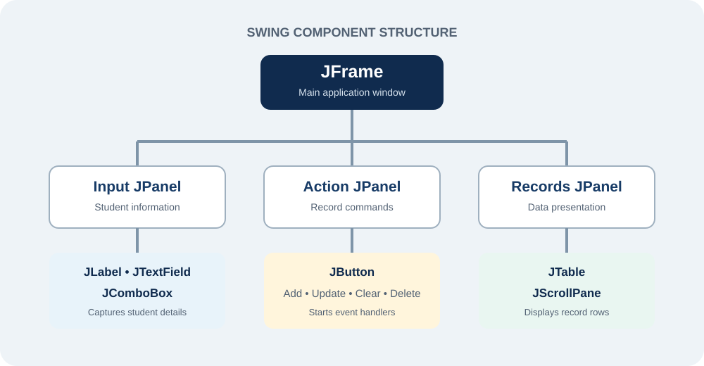
| Component | Purpose in the system | Suggested variable name |
|---|---|---|
JFrame | Main application window | StudentRecordForm |
JPanel | Groups related interface elements | pnlStudentForm |
JLabel | Describes an input field | lblStudentId |
JTextField | Accepts a short text entry | txtStudentId |
JComboBox | Presents a controlled list of choices | cmbProgram |
JButton | Starts an action | btnAdd |
JTable | Displays records by row and column | tblStudents |
JScrollPane | Allows the table to scroll | scrStudentTable |
JOptionPane | Shows feedback, warnings, or confirmation | Used directly |
Professional naming convention
Use short prefixes such as txt, btn, cmb, and tbl. A meaningful name such as btnUpdate is easier to explain and maintain than a default name such as jButton3.
03
System Planning Before Opening the Form Designer
Good interface design begins with a clear data plan. The class should first identify which information is required and what operations the user must perform. This prevents the interface from becoming crowded or incomplete.
Recommended student data fields
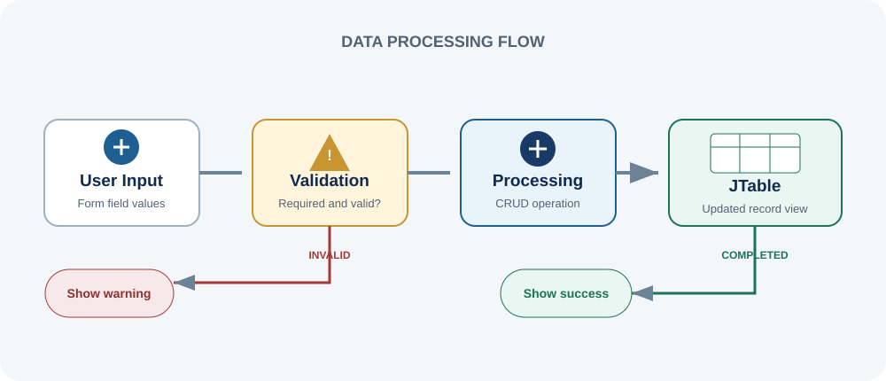
Core functional requirements
- Add a record. Accept valid student details and display them as a new table row.
- View records. Present stored information in an organized table.
- Select a record. Copy a selected table row back into the input fields.
- Update a record. Replace the selected row with revised values.
- Delete a record. Remove the selected row after confirmation.
- Search records. Filter or locate a student by ID or name.
- Clear the form. Reset all fields for the next entry.
04
Guided Lesson: Building the JFrame Form
The following sequence is intended for classroom demonstration. Each step contains the action, the concept to explain, and the expected visual result.
Create the Java project and JFrame Form
In NetBeans, create a Java Application project. Add a new JFrame Form and name the class StudentRecordForm.
- Use a descriptive project name such as
StudentRecordSystem. - Place the form in a suitable package such as
studentrecords. - Use the Design tab for layout and the Source tab for logic.
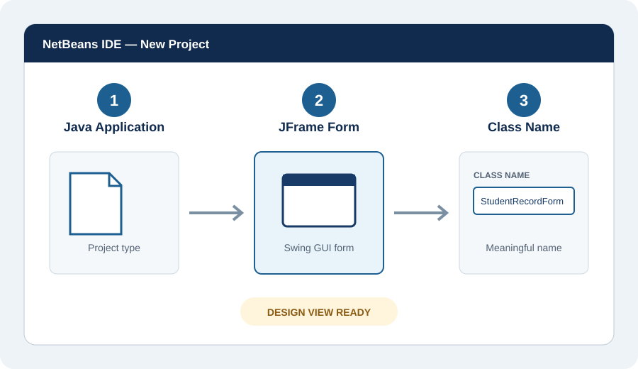
Set the main window properties
Select the JFrame and adjust its essential properties. These values establish a clear title and predictable opening behavior.
titleStudent Record System
defaultCloseOperationEXIT_ON_CLOSE
resizabletrue
minimumSize1100 × 680
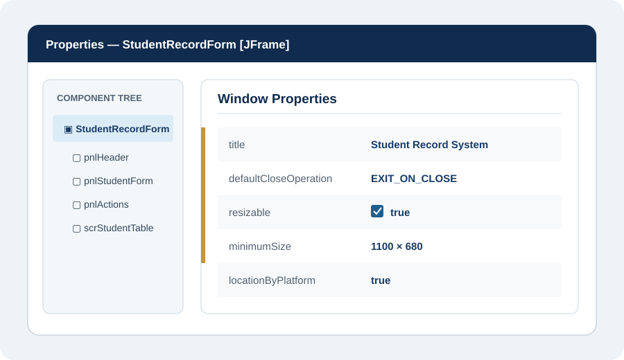
Arrange the input form
Drag labels and input controls from the Palette. Align related labels and fields to create a consistent reading path from top to bottom.
- Use text fields for ID, name, email, and contact number.
- Use combo boxes for program and year level.
- Keep labels short and place them close to their fields.
- Do not use color alone to indicate a required field.
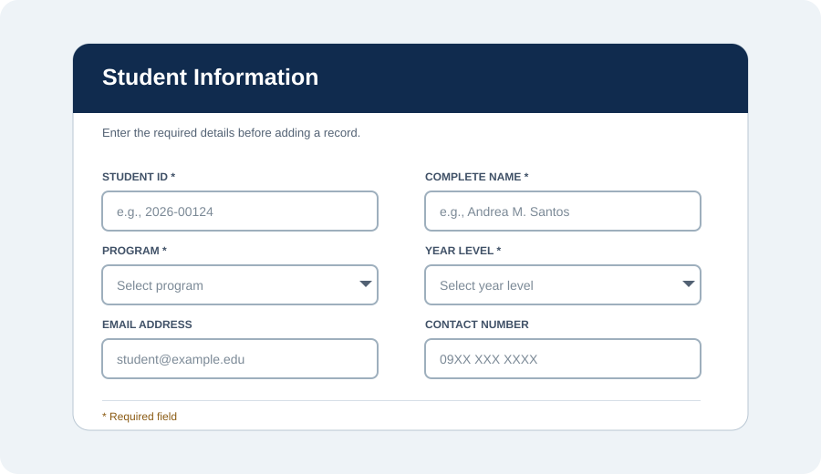
Add the action buttons
Add buttons below the input form and name them according to their actions. Keep the primary action visually clear and place destructive actions last.
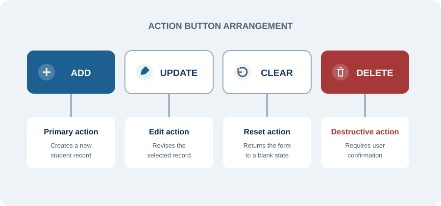
Configure the JTable and table model
Place a JTable inside a JScrollPane. The DefaultTableModel manages column headings and rows displayed by the table.
DefaultTableModel model = new DefaultTableModel(
new Object[] {
"Student ID", "Complete Name", "Program",
"Year Level", "Email", "Contact Number"
},
0
);
tblStudents.setModel(model);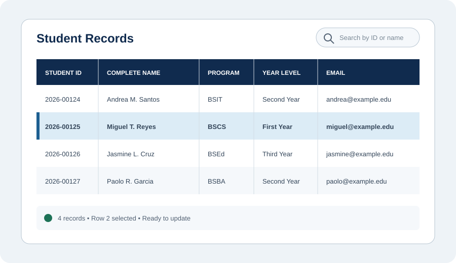
Connect actions through event listeners
Swing follows an event-driven model. The program waits for a user action. When a button is clicked, its event handler performs the related task.
private void btnAddActionPerformed(
java.awt.event.ActionEvent evt) {
addStudentRecord();
}The event method should call a clearly named helper method. This separates the interface event from the processing logic.
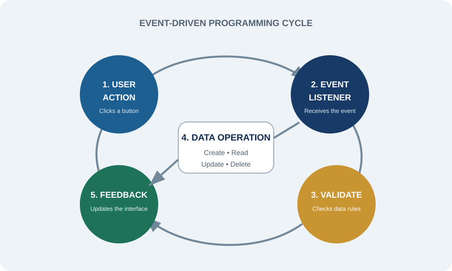
05
Understanding CRUD Operations
CRUD means Create, Read, Update, and Delete. These four operations form the central behavior of most record-management systems.
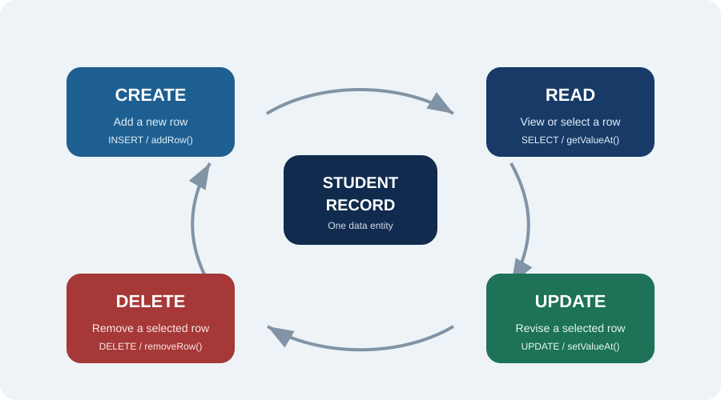
Add a valid row to the table
private void addStudentRecord() {
if (!isFormValid()) {
return;
}
DefaultTableModel model =
(DefaultTableModel) tblStudents.getModel();
model.addRow(new Object[] {
txtStudentId.getText().trim(),
txtCompleteName.getText().trim(),
cmbProgram.getSelectedItem(),
cmbYearLevel.getSelectedItem(),
txtEmail.getText().trim(),
txtContactNumber.getText().trim()
});
clearForm();
JOptionPane.showMessageDialog(this,
"Student record added successfully.");
}Explanation: The method validates the form, obtains the current table model, creates one row from the form values, clears the fields, and reports success.
Load a selected row into the form
private void tblStudentsMouseClicked(
java.awt.event.MouseEvent evt) {
int row = tblStudents.getSelectedRow();
if (row >= 0) {
txtStudentId.setText(
tblStudents.getValueAt(row, 0).toString());
txtCompleteName.setText(
tblStudents.getValueAt(row, 1).toString());
cmbProgram.setSelectedItem(
tblStudents.getValueAt(row, 2).toString());
cmbYearLevel.setSelectedItem(
tblStudents.getValueAt(row, 3).toString());
}
}Explanation: The selected table row becomes the current record. Its values are copied into the fields so the user can inspect or revise them.
Replace the selected row values
private void updateStudentRecord() {
int row = tblStudents.getSelectedRow();
if (row == -1) {
showWarning("Select a record to update.");
return;
}
DefaultTableModel model =
(DefaultTableModel) tblStudents.getModel();
model.setValueAt(txtStudentId.getText().trim(), row, 0);
model.setValueAt(txtCompleteName.getText().trim(), row, 1);
model.setValueAt(cmbProgram.getSelectedItem(), row, 2);
model.setValueAt(cmbYearLevel.getSelectedItem(), row, 3);
}Explanation: Updating requires a selected row. Each form value is written to its corresponding column in that same row.
Confirm before removing a record
private void deleteStudentRecord() {
int row = tblStudents.getSelectedRow();
if (row == -1) {
showWarning("Select a record to delete.");
return;
}
int answer = JOptionPane.showConfirmDialog(
this,
"Delete the selected student record?",
"Confirm deletion",
JOptionPane.YES_NO_OPTION
);
if (answer == JOptionPane.YES_OPTION) {
((DefaultTableModel) tblStudents.getModel())
.removeRow(row);
clearForm();
}
}Explanation: A confirmation dialog helps prevent accidental data loss. The row is removed only when the user chooses Yes.
06
Input Validation and User Feedback
Validation protects data quality. It should occur before a record is added or updated. Error messages must identify the problem and tell the user how to correct it.
Empty-field check
Student ID, complete name, program, and year level must not be empty.
Email check
The email should contain a valid local part, an @ symbol, and a domain.
Numeric check
A contact number should accept only expected digits and symbols.
Duplicate ID check
Each student ID should identify only one record.
private boolean isFormValid() {
String id = txtStudentId.getText().trim();
String name = txtCompleteName.getText().trim();
String email = txtEmail.getText().trim();
if (id.isEmpty() || name.isEmpty()) {
showWarning("Student ID and complete name are required.");
return false;
}
if (!email.isEmpty()
&& !email.matches("^[A-Za-z0-9+_.-]+@[A-Za-z0-9.-]+$")) {
showWarning("Enter a valid email address.");
return false;
}
return true;
}Important distinction
A JTable only displays the current in-memory rows. When the program closes, those rows are lost unless the system is connected to persistent storage such as a file or database.
07
Search, Clear, and Usability Features
Clearing the form
private void clearForm() {
txtStudentId.setText("");
txtCompleteName.setText("");
txtEmail.setText("");
txtContactNumber.setText("");
cmbProgram.setSelectedIndex(0);
cmbYearLevel.setSelectedIndex(0);
tblStudents.clearSelection();
txtStudentId.requestFocus();
}Usability checklist
- Use consistent spacing and alignment.
- Display complete, readable field labels.
- Keep button wording short and action-based.
- Show confirmation before deletion.
- Return focus to the first field after clearing.
- Allow keyboard navigation in logical order.
- Do not overcrowd the window with decoration.
Introducing search with a row filter
A TableRowSorter can filter the displayed rows while leaving the underlying model unchanged.
private void searchRecords() {
DefaultTableModel model =
(DefaultTableModel) tblStudents.getModel();
TableRowSorter<DefaultTableModel> sorter =
new TableRowSorter<>(model);
tblStudents.setRowSorter(sorter);
sorter.setRowFilter(
RowFilter.regexFilter(
"(?i)" + Pattern.quote(txtSearch.getText().trim())
)
);
}Pattern.quote() treats the search text as ordinary text instead of a regular-expression command. The class requires import java.util.regex.Pattern;.
08
Data Storage: From Classroom Prototype to Real System
The first lesson may use a table model only. A later version can introduce persistent storage. This progression lets students understand interface behavior before adding database complexity.
Arrange controls and practice component properties.
Apply CRUD operations during one program session.
Save and reload records using CSV or serialization.
Use JDBC and prepared statements with a relational database.
Separation of concerns
In a larger system, keep the interface, student data model, validation rules, and database operations in separate classes. This makes the program easier to test, explain, and maintain.
09
Testing and Debugging the Form
Testing should cover normal use, incorrect use, and boundary cases. Students should record the expected result before running each test.
| Test case | Action | Expected result |
|---|---|---|
| Valid entry | Complete all required fields and click Add | A new row appears and the form clears |
| Missing ID | Leave Student ID blank and click Add | A warning appears; no row is added |
| Invalid email | Enter an incomplete email address | A format warning appears |
| No selection | Click Update without selecting a row | The system asks the user to select a record |
| Delete cancel | Click Delete and choose No | The record remains in the table |
| Search case | Search using lowercase letters | Matching names appear regardless of letter case |
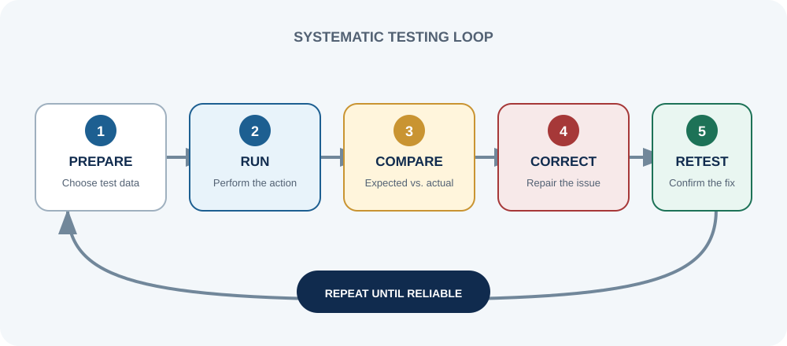
Common beginner errors
Table columns begin at index 0. A mismatched index places data in the wrong column.
Calling an update or delete operation with row -1 causes an error.
Names such as jTextField1 make code difficult to explain and maintain.
Repeated code should be moved into helper methods such as clearForm().
10
Complete Process Summary
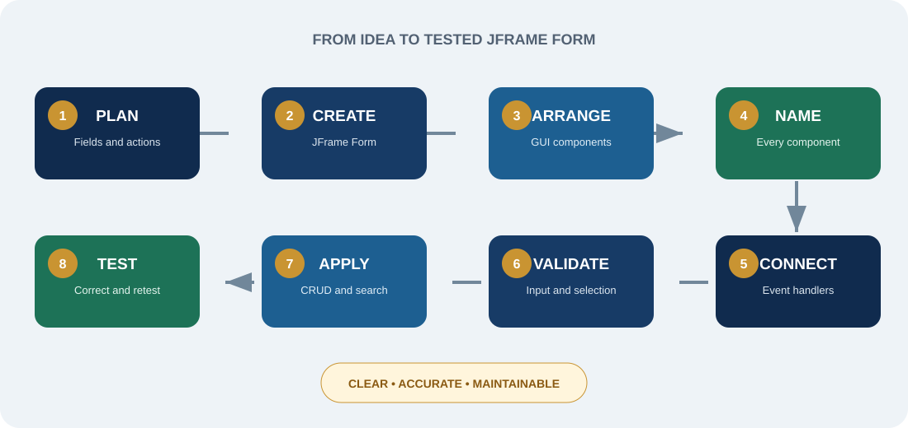
1Plan the fields, actions, and table columns.
2Create the JFrame Form and set its properties.
3Arrange labels, controls, buttons, and the JTable.
4Name every component clearly.
5Connect buttons to event handlers.
6Validate user input before processing.
7Apply CRUD and search operations.
8Test normal, invalid, and boundary cases.
11
Discussion and Assessment
Guide questions
- Why is JFrame called a top-level container?
- What is the role of a
DefaultTableModelin the system? - Why must the selected row be checked before updating or deleting?
- How does input validation improve the quality of student records?
- What is the difference between data displayed in a JTable and data saved in a database?
- Why should deletion require confirmation?
- How does separating helper methods improve code readability?
Practice-project analysis
Instruction: On paper or in a document, design an improved Student Record System interface. Label each Swing component and write its suggested variable name. Then prepare a flowchart for one operation: Add, Update, Delete, or Search.
Submission: Interface sketch, component list, operation flowchart, and a brief explanation of validation rules.
Evaluation rubric
| Criterion | Excellent | Satisfactory | Needs improvement |
|---|---|---|---|
| Interface organization | Complete, logical, and highly readable | Mostly organized with minor issues | Important elements are missing or unclear |
| Component identification | All components and names are correct | Most components are correctly identified | Several components are incorrect |
| Process explanation | Flow is accurate and clearly explained | Flow is generally correct | Flow contains major gaps |
| Validation rules | Rules are complete and appropriate | Basic rules are provided | Rules are incomplete or unsuitable |
12
Lesson Conclusion
The Student Record System combines interface design, event-driven programming, table models, validation, and record-management logic in one practical lesson. JFrame Form makes the visual layout easier to construct, but professional results still depend on thoughtful planning, clear naming, correct logic, and systematic testing.
Students who understand this project can transfer the same principles to inventory systems, library systems, appointment systems, and other desktop record-management applications.